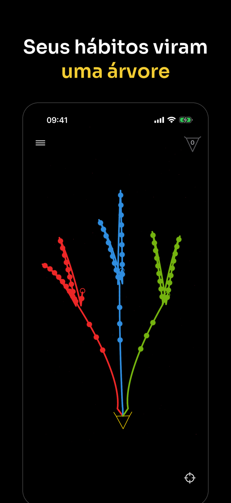
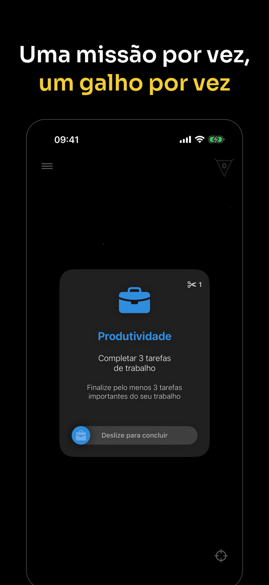
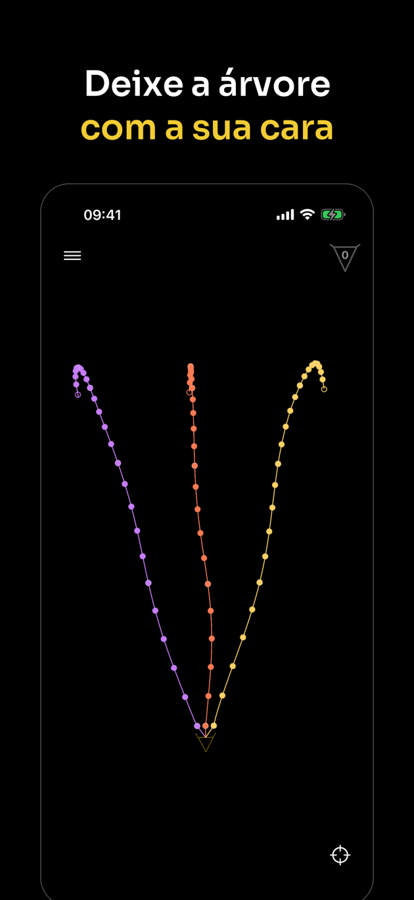
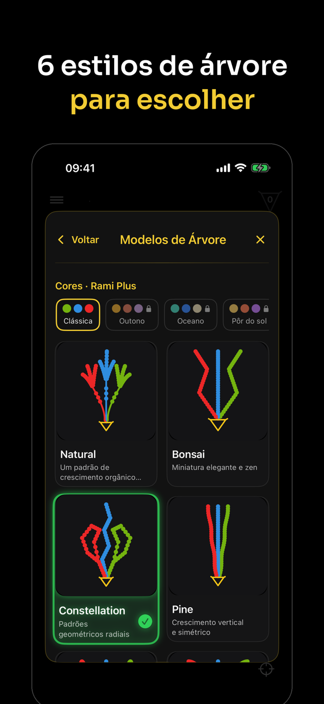
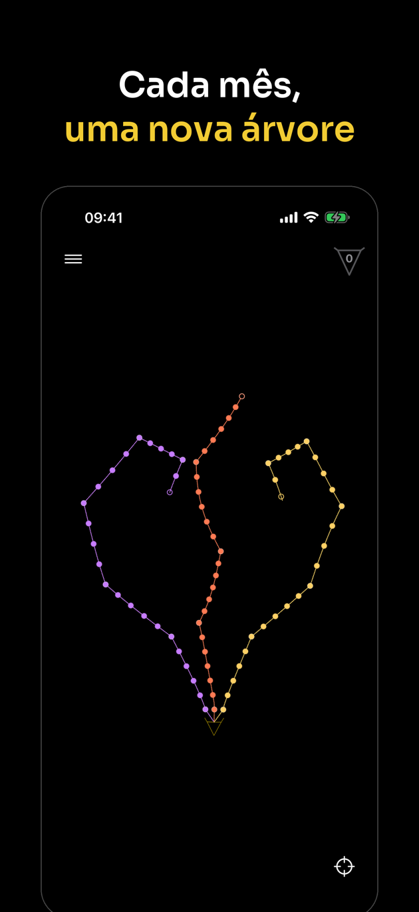

Seus hábitos viram uma árvore
Complete missões todos os dias e veja sua árvore crescer ao longo do mês. Uma rotina mais equilibrada, sem culpa e sem pressão.
Baixar na App StorePara iPhone
- Diversão
- Saúde
- Produtividade





Como funciona
Escolha suas missões
Três categorias que crescem juntas: Diversão, Saúde e Produtividade.
Um galho por missão
Cada missão concluída adiciona um galho à sua árvore.
Uma árvore por mês
Conclua as missões do mês e, com conta, reveja as árvores anteriores no histórico.
No seu ritmo
Lembrete diário no horário que você escolher. Funciona offline e, para quem tem conta, sincroniza quando a conexão voltar.
Grátis para começar: use o app completo com a árvore Natural, sem pagar nada e sem criar conta. Árvores extras e a assinatura Rami Plus são opcionais.
Suporte
Dúvida, problema ou sugestão? Escreva para corgosinhocorp@gmail.com. Respondemos em português e em inglês.
Enviar e-mailComo cancelo ou gerencio o Rami Plus?
A assinatura é cobrada pela Apple. No iPhone, abra Ajustes, toque no seu nome e depois em Assinaturas. Quem é assinante também encontra o botão “Gerenciar assinatura” na Loja do app. O Rami Plus renova automaticamente, a menos que seja cancelado até 24 horas antes do fim do período atual.
Comprei uma árvore e ela não apareceu
Abra o menu do app, entre em Configurações e toque em “Restaurar Compras”. A mesma opção fica no fim da Loja. Use a mesma conta Apple em que a compra foi feita.
Como peço reembolso?
As compras são processadas pela Apple, e é ela quem decide os reembolsos. Faça o pedido em reportaproblem.apple.com.
Preciso criar uma conta?
Não. Você pode usar o app sem conta: o progresso fica só no seu iPhone. Para guardá-lo na sua conta, toque em “Entrar com a Apple”, no aviso “Salve o seu progresso” ou em Configurações. O que você já fez no aparelho é somado à conta. Sem conta, apagar o app apaga o progresso; compras e assinatura ficam na sua conta Apple e voltam com “Restaurar Compras”. Só as podas pedem conta, porque o saldo delas fica guardado nos nossos servidores.
Como excluo minha conta e meus dados?
Se você tem conta, abra o menu do app, entre em Configurações e toque em “Deletar Conta”. A exclusão é permanente e apaga sua conta e todos os seus dados do The Rami: perfil, árvores, missões e histórico. Ela não cancela a assinatura: cancele antes nos Ajustes do iPhone. Se não conseguir entrar no app, peça a exclusão por e-mail. Sem conta, o app não envia seu progresso nem seus dados pessoais aos nossos servidores: apague o app do iPhone e o progresso guardado nele vai junto.
Não recebo o lembrete diário
Confira se “Lembrete diário” está ligado nas Configurações do app e se as notificações do The Rami estão permitidas nos Ajustes do iPhone.
O app funciona sem internet?
Sim, depois que o app baixa as missões na primeira abertura (isso precisa de internet). Quem tem conta sincroniza o progresso quando a conexão voltar.
Privacidade
Entrar com a Apple é opcional: você pode usar o app sem conta. O app não tem anúncios nem rastreamento de terceiros. Leia a Política de Privacidade e os Termos de Uso.